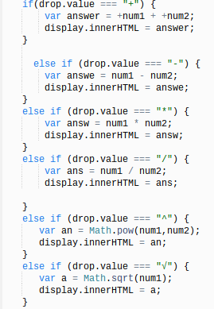

Creating Variables
What does it do?
Javascript

HTML
<input id="num1"/> <input id="num2"/> <button id="solve">Solve</button> <div id="display"></div>In Javascript
Var creates a variable by adding an id for example like num1input or drop.This makes it so the javascript can perform a task, and so it can function. For example the var num1input represents the value in the box where the numbers go, and what ever you add to it changes value of num1input. To create a variable you just type in var, and create an Id with any name you want. . If you look closely at the picture to the left you can see document.getElementById( ) The way it works is that it looks at the documents with a special id. It then gets the element by looking at the Id. Targeting the variable, and making it function a certain way.
In HTML
In Html you would type the following code in the table to the left. This creates things like a clickable button, displays, and many inputs. The html file is linked straight to the javascript. In order for it to work you must link it using the code <script src="calculator.js"> </script>
If Else statements
Javascript
Html
<select id="drop"><option value="+"> + </option> <option value="-"> - </option> <option value="*"> * </option> <option value="/"> / </option> <option value="^"> ^ </option> <option value="√"> √ </option> </select>
In Javascript
If else statements create a statement,which makes it so that if a value is a specific item it will function as that specific item.
It takes the variable and says if this value (in my case which
is equal +, *, - , or /) it should complete this specific task.
The drop value is a dropdown menu that has different functions, and choices.
For example the math symbols (+,-,*,/, ^, sqrt) are all in a selector that has a dropdown with these choices.
In Javascript you can create a variable that allows the calculator to function. For example in the picture I created the 2 variables num1input, num2input. num1 can change its function. By adding a numb2 variable you can either
(-, +, /, *) numb1 and numb2. This comes with many options, to change the value or answer that will display on the page.
In Html
In html it's very simple, all you have to is to create code similar in the box to the left. So basically you need to create option values, which is where you would make each value equal to the math symbol (-,+,*,/,^, etc). This allows the dropdown bar to have a the 6 working functionalities.